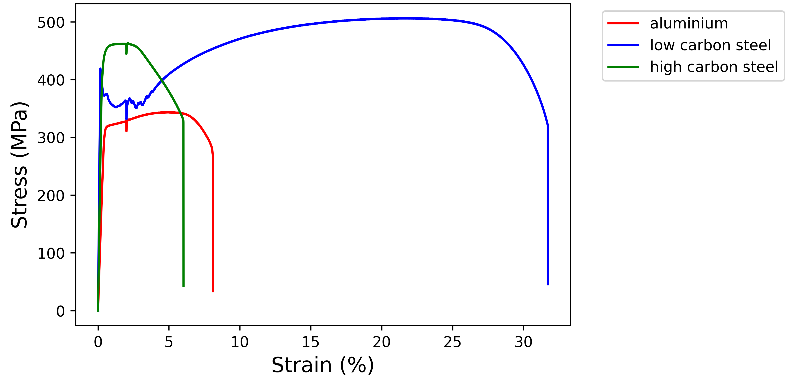
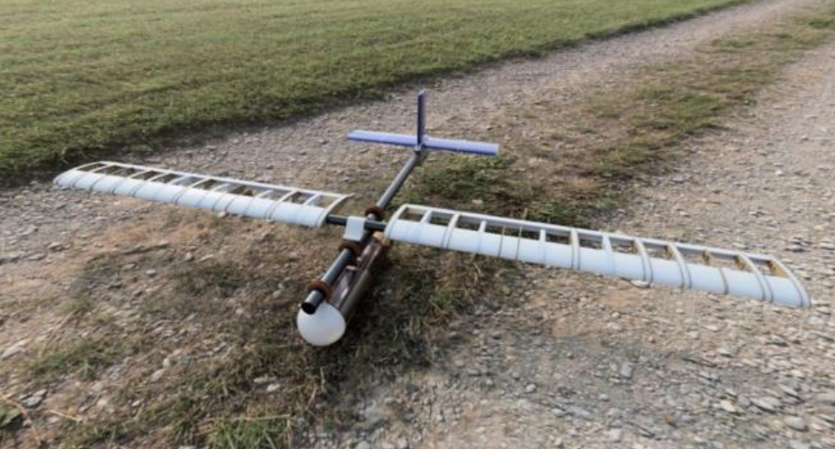
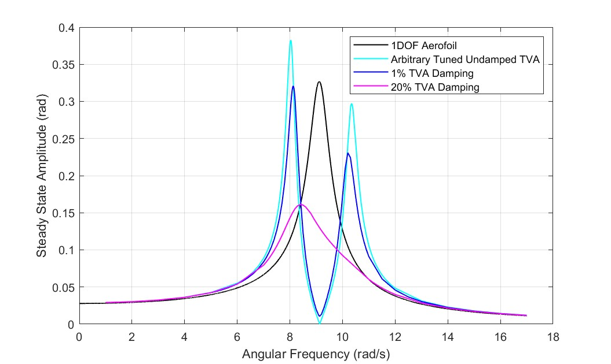
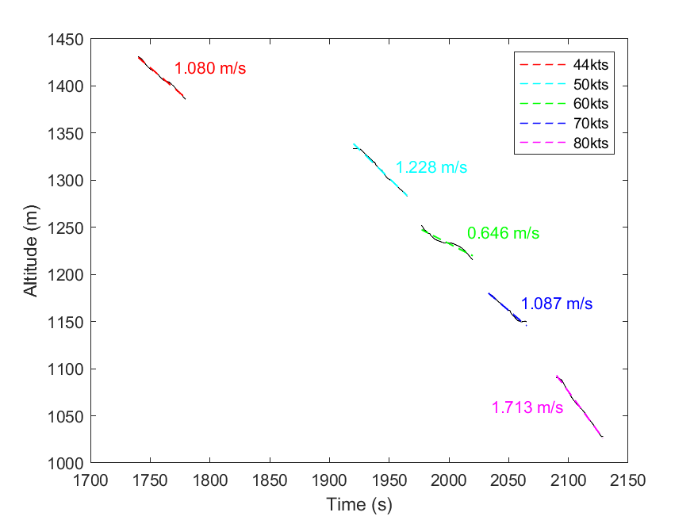

Used CAD software (Fusion 360) to design and assemble a 'line following robot' given a range of specifications, requirements, and 2D drawings to comply with.
Engineering By Design

Engineering By Investigation
Used Python to analyse data in a csv file of the behaviour of different metal alloy specimens as they underwent a torsion test, tensile test and charpy impact test. Their performance and determined parameters were used to determine the most appropriate material and diameter for a rod and pin used in an aircafts control surface actuator mechanism, demanding the ability to withstand fatigue from variable loads and temperatures throughout their lifetime by retaining their strength, function and shape.

AVDASI 2
Worked in a team of 100 students to design and manufacture a UAV, with the aim of shortening the minimum take-off distance and ensuring the aircrfat could withstand loads of up to 6g. Took responsibility for the tailplane elevator mechanism, which used a PID closed-loop control system (made with Arduino) to produce the desired pitch rate, determined from the calculated relationship between servo motor deflection angle and elevator deflection.

Vibrations
Analysed the response of a single degree of freedom aerofoil, using a MATLAB simulation. Constucting the systems equation of motion and gathering data from the simulation with varied inputs allowed the amplitude-frequency characteristics to be determined. Introducing a secondary degree of freedom in the form of a tuned vibration absorber generated a region of anti-resonance at the desired operating frequency.

Aerospace Dynamics
Analysed real flight data gathered from the University of Bristol Glider, assessing its dynamic performance in trimmed condition when subject to a sudden control stick input. Constructing the linearised equations of motion allowed the eigenvalues and eigenvectors to be determined, giving an insight into the handling qualities of the aircraft.
.
.